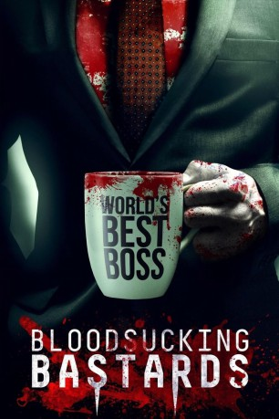

#10614 Bloodsucking Bastards - Mein Boss ist ein Blutsauger
Alternativ: Bloodsucking Bastards (Englischer Titel)
 
 IMDB-Wertung: 5.7 / 10
IMDB-Wertung: 5.7 / 10  Metascore: 50
Metascore: 50 
Beruflich in der Sackgasse: Der pflichtbewusste Evan sitzt gemeinsam mit seiner bezaubernden Freundin Amanda und seinem faulen besten Freund Tim in einem seelenraubenden Unternehmen fest. Evans Leben wird eines Tages auf den Kopf gestellt, als ihn Amanda aus heiterem Himmel verlässt und sein Boss Ted bei einer heißbegehrten Beförderung Evans Erzfeind Max den Vorrang gibt. Doch damit nimmt der Albtraum erst seinen Anfang, denn Max entpuppt sich als blutrünstiger Vampir, der das Büro nach seinen ganz eigenen Vorstellungen umgestalten will. So liegt es schließlich an Evan und Tim, das Böse zu stoppen, welches sich in ihrer Firma ausbreitet ...
Jahr: 2015
Dauer: 84 Minuten
FSK: 16
Land: USA Studio: Scream FactoryTonspuren: DTS - ,
Untertitel: Deutsch, Englisch,
Auflösung: 1080p (1920x808) Größe: 3604 MB
Genre: Action, Horror, Komödie
Regisseur: Brian James O'Connell
Drehbuch: Sean Cowhig, Neil W. Garguilo, Ryan Mitts, Brian James O'Connell, Justin Ware
Soundtrack: Anton Sanko
Darsteller:
 Fran Kranz als Evan
Fran Kranz als Evan Pedro Pascal als Max
Pedro Pascal als Max Joey Kern als Tim
Joey Kern als Tim Joel Murray als Ted
Joel Murray als Ted- Emma Fitzpatrick als Amanda
- Yvette Yates als Zabeth
- Justin Ware als Andrew
- Neil W. Garguilo als Mike
 Parvesh Cheena als Jack the Intern
Parvesh Cheena als Jack the Intern- Zabeth Russell als Elaine
- Sean Cowhig als Janitor
- Patricia Rae als Sofia
- Brian James O'Connell als Mail Room Boy
- Tommy Bechtold als Phallicyte Executive
- Brian Konowal als Vampire Drone
- Jacquelyn Palmquist als Vampire Drone
- Jessica Rothert als Vampire Drone
- Kyran Danaher als Lawyer
- Adam Slemon als Vampire Lawyers
- James Warfield als James
 Matthew Lillard als Phallicyte Executive (uncredited)
Matthew Lillard als Phallicyte Executive (uncredited)- Marshall Givens als Frank
- David F. Park als Dave
- Lauren Miller als Phallicyte Executive
- Michael Hughes als Vampire Drone
- Peter Hard als Vampire Drone
- Heather Miller als Vampire Drone
- Bethany Hilliard als Vampire Drone
- William Treadwell als Vampire Lawyers
Datei: X:\2015(A-F)\Bloodsucking Bastards - Mein Boss ist ein Blutsauger (2015, FSK16, 1920x808).mkv seit 04.02.2019
Festplatte: HD 2015(A-Z)
 Es gibt insgesamt 143 Filme in der Gruppe '2015(A-F)'
Es gibt insgesamt 143 Filme in der Gruppe '2015(A-F)'